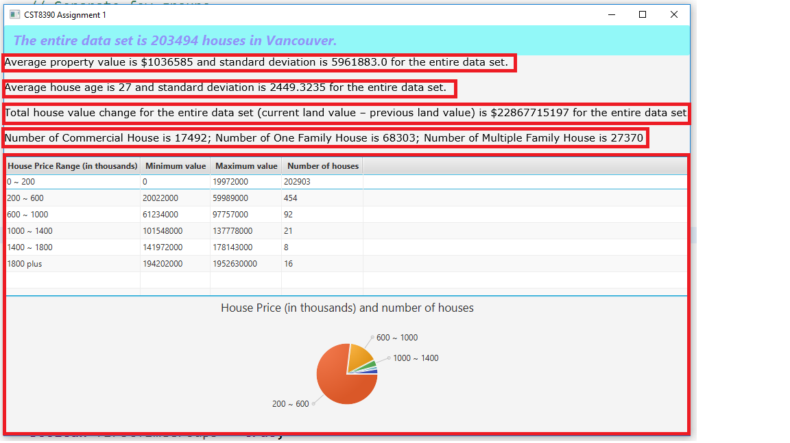
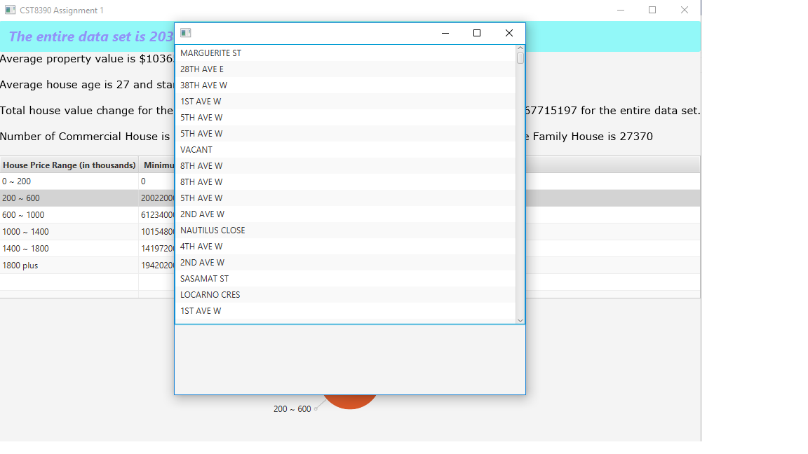
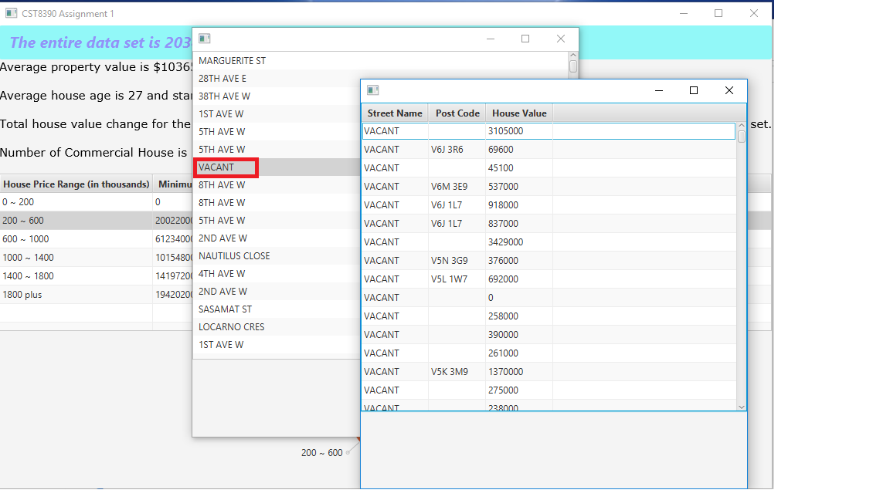

This is CST8390 Assignment 1, which uses the 2015 CSV file for City of Vancouver property tax assessments: http://data.vancouver.ca/datacatalogue/propertyTax.htm
The copy of csv file is under the CST8390Assignment1 folder.
I did the following changes for the csv file to get Assignment done:
When you run the project as Java Application, you will get the below result.
Each highlight responds to step 1 - 5 requirements, I did both table and pie char for step 5 to get more detailed compare.
When you double-click any displays of text or table or pie char, it will open the streets stage.
When you double-click any line of streets list, it will open the street details stage.
